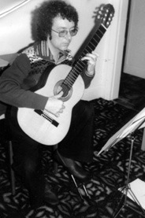

Biography
The Young Musician
Born in 1951, in Urmston, Manchester, music has always been a part of his life from a very early age. Chris, who began playing guitar at 11 in an attempt to follow in the footsteps of Hank Marvin of the Shadows, like so many of his generation, also learned classical guitar at the same time. Because the Shadows' music was not at that time available, he began taking the music off the records, armed with a good ear and his recently learned knowledge of the structure of musical harmony.
He was always composing music, albeit firstly pseudo-Shadows instrumentals, and then singer-songwriter material when he became part of that tradition in his early 20s. At the time of leaving school he joined his first group a folk trio, imaginatively called Sue, Jean and Chris with whom he played a grand total of 8 concerts. He then commenced a more interesting partnership with Chris Fogg, a school friend of like mind, with whom he wrote some of his earliest songs, and together they played many concerts over a four-year period. From 1970 onwards he managed to write over 150 songs, some of which were collaborations with friends.
The Musical Director
In 1974 he was asked to be Musical Director for a new amateur theatre group, which later became Genesis Theatre, a group who revelled in performing rock musicals often never attempted by amateurs. In this capacity he directed the music for Hair, Tommy, Demolition Man, and numerous other shows including two shows co-written with the Director, Chris Fogg, called Stag and Marilyn. Both were performed to great acclaim, and Genesis Theatre performed numerous times at the prestigious Royal Exchange Theatre to sell-out audiences. During this time members of the resident theatre group band and some of the cast singers combined to form a rock group, which after various name changes, became Elf. Here his knowledge of multiple harmonies and his previous use of interesting arrangements were used to great effect in producing a group sound that, at its best, was unusual and intriguingly different from other groups of the time. They toured locally for little more than a year before deciding to call it a day, by which time Genesis Theatre had also split up after seven years together, as people started moving away, and settling down to married life. Fulfilling a long-held desire to return to these songs, Chris organized a charity concert evening in November 2017 with a full band and several singers who performed songs from both Stag and Marilyn on their 40th & 35th anniversaries respectively, and made a total of £1226 for Brentwood School, a special school for 11-19 year-olds that Chris’ daughter Felicity attends.
The Composer
Chris had always played and composed for the classical guitar along with all his other musical activities. This really took off in the early 80's when his songwriting started to lose interest for him, especially as composing music for the classical guitar, both solo and in various combinations of instruments began to mean more to him. It was at this time that he had the idea of transcribing the recorded works of Agustin Barrios, the famous Paraguayan guitar performer and composer, who made nearly sixty 78rpm recordings, but never managed to write most of them down himself. It took Chris three years of his spare time to write them all down, and they eventually saw the light of day as 'The Barrios Anniversary Edition'. This was the first edition (now out of print) to publish the complete transcriptions of Barrios, but Chris' transcriptions were then published elsewhere, the original works amalgamated into Rico Stover’s massive two-volume set 'The Complete Works of Agustin Barrios Mangore', published by Mel Bay, and Barrios' own arrangements, published in one book by Lathkill Music 'Agustin Barrios – The Arrangements'.
For the last 35 years, Chris has carried on composing, mostly works for classical guitar. All of these remained unplayed in a professional capacity until 1996, when Paul Gregory came to play at the Manchester Guitar Circle. He asked Chris for a set of pieces that quoted folk-songs as their basis and the end result was A Garland of Grainger. Paul Gregory gave the premiere of the following spring at the Brighton Festival, and which continues to be in his repertoire today.
After that, several collaborations have occurred, and Chris wrote no less than eight works for Paul finishing with a 30 minute Quintet in 2002 Paul, being a lover of chamber works involving the guitar, asked Chris each time for works of different combinations of instruments with the guitar.
Since then other players including Karin Schaupp, Neil Smith and Philippe Lemaigre have played his Barrios transcriptions, and Craig Ogden (the Australian guitarist whose playing was included in the 'Notting Hill' film soundtrack), Shuko Shibata, Galina Vale, Scott Bradley, Duo Flamas, TrioConBrio and most recently the American born player, Valerie Hartzell, have played his original works.
As a result, Chris started receiving compositional commissions. He wrote a piece for the 2001 Dillington Festival, which was performed by the assembled students in the end-of-festival guitar orchestra recital. October 2001 saw the first performance by Craig Ogden and the multi percussionist Paul Tanner; of his 22-minute Sonatina for Tuned Percussion and Guitar which was first performed in Perth, and was then broadcast on Australian ABC, Classic FM, and more recently has written several works for the Cambridge Guitar Orchestra under the baton of Valerie Hartzell, and a new work for contralto and guitar for Valerie and singer Tamara McCoy based on the poems of Thomas Hardy, to be performed later on this year.
The (Older) Musician
Chris also reviews sheet music and recordings for the US-based Classical Guitar magazine, spent several years, and many enjoyable hours writing and performing in an acoustic instrumental cross-over group, Acoustic Moods, and is still in considerable demand as a transcriber. As such, he is regularly asked to transfer to manuscript, recorded guitar works which have never been printed, by a growing number of players, including Gordon Giltrap, to name but one famous writer/performer.
Chris has a large quantity of private guitar students and plays classical guitar at various functions. He makes himself available for private parties, wedding receptions and many other get-togethers where people want some light unobtrusive music in the background. After more than 35 years of doing this, Chris has more than six hours of unrepeated material to use on such occasions. His unusual ability to make up arrangements, on the spot, of requests he gets at such functions, has amassed more than two hours of his own arrangements of popular material. This has resulted in three recorded CDs of a total of 57 of them, called Making Arrangements, Further Arrangements and Alternative Arrangements. The sheet music for 20 of these pieces has been published by Lathkill Music, in 2 volumes called 'Ten Popular Songs Volumes 1 and 2'.
Lately, he has been using the skills of his Acoustic Moods compatriot, Tony Ward, to restore his entire recorded back catalogue of shows, songs, and performances from very breakable tape to CD and computer files, a work of love that took a number of years, but happily they are all restored and safe, and available to any interested parties to purchase.
Another important part of Chris’ time was the co-foundership of Manchester Acoustic Guitar with his old mate Chas Coghill. This came out of a decision to create a society dedicated to acoustic guitar-based music of all styles, rather than focusing specifically on any one style, such as classical or folk, as many other societies do. The society started up back in March 2006 and after twelve years goes from strength to strength, meets once a month, and includes not only an open-mic facility but also has occasional concerts organized.